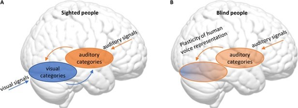
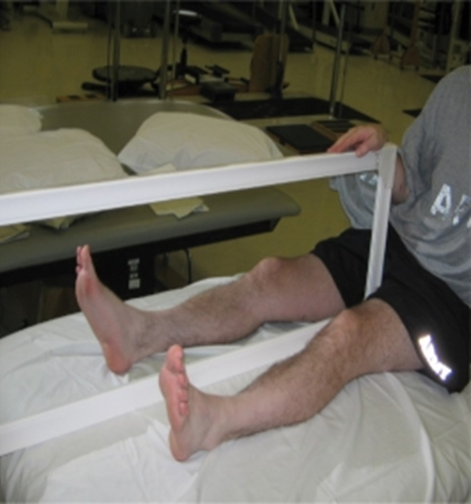
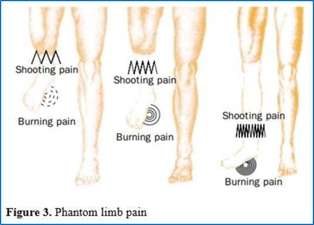
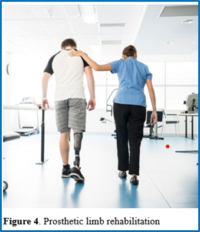

Neuroplasticity and sensory loss: The brain reorganization after amputation and impairment of senses#
By Zu Smilnakova
1.1 Neuroplasticity and Sensory Loss#
We perceive and interact with the world through our senses. Our brain integrates sensory information from different sources to create a coherent and meaningful representation of our surroundings. The process depends on the neural connections that are formed and modified by our experiences and development. Multisensory integration enables us to adapt to the changes in our sensory environment, such as the loss of a sense.
Sensory loss and its impacts#
Sensory loss is partial or complete impairment of one or more sensory modalities. Our development, learning, and cognitive performance can be profoundly affected by the loss of a sense. Early theories once suggested that normal brain function requires all senses, and that sensory deprivation would severely impair multisensory integration (Axelrod, 1959). However, blind and deaf individuals exhibit remarkable adaptations following sensory loss, challenging this traditional view. Research by Merzenich et al. (1984) indicates that these adaptations lead to reorganization in various brain areas, impacting both the processing of remaining senses and the areas associated with the lost sense. These changes not only enhance skills and performance in tasks reliant on the remaining senses but may also present challenges, especially when attempting to restore or gain sensory function later in life. Sensory loss and neuroplasticity are complex phenomena that require careful investigation and understanding.
Cortical reorganization#
Mammalian brains are malleable. The malleability translates into a re-organization in response to environmental changes, experiences, and damage. Early studies of neural reorganization focused on the damages in sensory and motor cortex of animals. Merzenich et al. (1984), amputated a finger digit from adult owl monkeys and monitored the changes in the 3b hand area of their primary somatosensory cortices. Following amputation, adjacent digits and palmar surfaces expanded their representation in the cortex, filling the territory previously occupied by the removed digit(s). This expansion led to increased magnification and finer-grained representation of these surrounding skin surfaces. Similarly, Florence & Kaas, 1995 partially amputated the forearms of 3 monkeys, causing the remaining afferents from intact limbs to extend into the deprived spinal cord and brainstem territories. The studies by Merzenich et al. (1984), and Florence & Kaas (1995) demonstrate the remarkable neural plasticity of the somatosensory system after amputation. Both studies show that the loss of a limb or a digit result in the expansion of the cortical representation of the adjacent or remaining body parts, as well as the reorganization of cortical areas. These changes reflect the brain’s ability to adapt to sensory deprivation, and to optimize the use of the available neural resources.
More evidence for neural reorganization after sensory loss comes from blind individuals. Without input to the visual cortex, the auditory and sensory cortices expand, repurposing the unused cortical tissue and possibly providing heightened attention and processing of nonvisual sensory information (Elbert et al., 2002). Cortical changes often follow repeated exposure, so the use-dependent reorganization seen in blind individuals may reflect the increased behavioral relevance of the intact senses Said more simply, when a particular body part or sensory skill experiences increased use, the brain’s representational zones dedicated to those functions grow, generally at the cost of less-utilized areas. The constant reshaping of our brains allows for the adaptability seen in animals across their life span, though the amount of reorganization possible in response to sensory loss may change based on when in the animal’s life the sense is lost.
Importance of critical period#
In postnatal development, cortical circuits undergo distinct periods of heightened sensitivity to sensory input, recognized as critical periods. Daw et al. (1992) studied the importance of critical periods in cats. Notably, animals deprived of sensory input between 8-9 and 11-12 months showed a marked shift in ocular dominance in layers II/III and V/VI, compared to animals of different ages. Daw et al. (1992) concluded that the critical period for monocular deprivation ends at approximately one year of age for extragranular layers (II, III, V, and VI) in the cat’s visual cortex, implying that cortical circuits exhibit heightened sensitivity to incoming sensory input during postnatal development’s critical periods. As adults reach the end of these critical periods, the brain’s capacity to broadly retain new sensory information diminishes, restricting the window for cortical plasticity (Patton et al., 2019). However, sensory deprivation can also occur later in life, due to injury, disease, or amputation. In the next chapter section, we will explore how sensory deprivation in adulthood can lead to a phenomenon known as phantom limb syndrome.
 Figure 2. Reorganization of the visual and auditory cortex due to blindness
1.2 Phantom limb syndrome#
The brain undergoes structural and functional changes following the loss of a body part. Nerves that were previously connected to the missing part continue to send signals to the brain. Consequently, the brain must reorganize sensory information to adapt to this new situation. As a result, the affected patient feels sensations or pain in the missing limb, a phenomenon known as Phantom limb syndrome (PLS), currently affecting 45-85% of amputees (Ziegler-Graham et al., 2008). Notably, this adaptation triggers significant reconstruction within the primary sensorimotor cortex (SM1), causing both structural and functional alterations (Jiang et al., 2015). Within the SM1 opposite the amputation site, specific regions, devoid of input, are enlisted by neighboring body parts with cortical representations, contributing to these changes (Raffin et al., 2016). However, the exact mechanism behind this process is still unclear, and different models have been proposed to explain it.
Physiological changes#
The physiological changes after amputation remain a mystery, with two models providing possible explanations. Among these, the maladaptive plasticity model suggests that the neighboring brain area expands, filling the space left by the missing limb, thereby contributing to phantom limb pain (Giummarra et al., 2011). Conversely, the persistent representation model contends that the original brain area governing the missing limb remains largely unchanged, possibly perpetuating the phantom pain (Makin et al., 2013). Empirical evidence supports both yet fails to account for the complex relationship between post-amputation sensorimotor reorganization and phantom pain, nor does it consider the pre-amputation brain area’s role or structure (Raffin et al., 2016).
Another explanation for the phantom limb pain stems from the changes in the peripheral nervous system. The substantial trauma from amputation affects nerves and neighboring tissues by disturbing the regular signals going to and from the missing limb. After amputation, the nerves start developing neuromas at the cut ends, and they become more sensitive and excitable due to elevated sodium-channel levels, leading to spontaneous nerve discharge (Vaso et al., 2013).
At the spinal cord level, nerves become more sensitive and their activity increases, expanding their reach—a phenomenon known as central sensitization. Heightened N-methyl-D-aspartate (NMDA) activity in the spinal cord enhances nerve responsiveness to specific substances (Latremoliere & Woolf, 2009). This restructuring causes the loss of specific sites targeted by inhibitory fibers, amplifying nociceptive signals, and diminishing inhibitory activity from higher brain centers, thereby contributing to phantom limb pain.
The physiological changes that occur after amputation have a significant impact on the development and maintenance of phantom limb pain. Understanding the physiological changes after amputation is crucial for developing effective interventions and treatments for phantom limb pain, which is the topic of the next section.
Note
A 31-year-old Indonesian Navy officer suffered a tragic loss of his right leg in a combat training accident. Since then, he has been tormented by various kinds of pain in his missing limb, which no painkillers could relieve. He also felt inferior to his peers as he was assigned to work in administration. He became depressed, isolated, and irritable. Unable to cope with his distress, he checked himself into a psychiatric clinic where he was diagnosed with Phantom Limb Syndrome (PLS).
PLS is a condition where people feel sensations, such as pain, itching, or movement in an amputated limb. It occurs because of a mismatch between the sensory input from the stump and the brain’s representation of the missing limb. To resolve this conflict, the brain reorganizes its sensory map, which may activate neighboring regions corresponding to other body parts. Although the sensations are only perceived, they cause physical and emotional discomfort to the amputees. It is impossible to completely cure the pain, but there are various strategies to manage the symptoms.
The technique that worked for the Navy officer to relieve his pain is called mirror therapy (MT). It involves a mirror placed in front of the unaffected limb to perform movements that mimic its actions. Looking at the mirrored movements, he perceived the phantom limb as also moving (Ramachandran & Rogers-Ramachandran, 1996). The visual feedback from the mirror allowed him to release the phantom limb from the perceived uncomfortable position, explained by the hypothesis that the brain prefers visual feedback over other types (Moseley et al., 2008). Diers et al., (2010) suggested that MT’s influence on cortical and spinal motor excitability is linked to the activation of the mirror neuron network. As the patient visually perceives the phantom limb movement in the mirror, the mirror neurons become activated, engaging in the rehabilitation of the affected body parts.
MT is one of many treatment options for PLS, among medications, nerve stimulation, therapy, and prosthetics. These treatments aim to reduce the pain and discomfort of PLS, as well as improve the function and appearance of the missing limb. However, the best treatment for each person depends on their symptoms, preferences, goals, and resources. Therefore, considering the brain’s remarkable plasticity, individualized treatments can tap into the brain’s adaptability and reorganization, potentially offering more effective and personalized approaches for managing PLS.
 Figure 1. Mirror therapy
Symptoms and treatment#
Patients diagnosed with Phantom limb syndrome describe the phantom limb pain (PLP) as sharp pins in the lost limb, or as a throbbing pain, usually in the upper part of the lost limb. The extent of the pain, and extent of the symptoms depend on the individual. Sometimes PLP gets mistaken for the pain originating at the actual site of the amputation, known as residual pain. Therefore, physicians examine the amputation site for any signs of infection or wounds to avoid mistakes in diagnosis. Once PLP is diagnosed, there are various treatment options, oriented at symptom management, due to gaps in understanding of the brain mechanisms behind the syndrome.

Treating Phantom Limb Pain (PLP) often involves pain relievers like NSAIDs or Tylenol, with opioids considered for their efficacy against neuropathic pain (Cascella et al., 2018). However, their use requires caution due to the risk of tolerance and potential dependence. Besides the pain, the experience of losing a limb itself causes significant distress. Patients often undergo feelings of hopelessness and depression while adjusting to life after amputation (Padovani et al., 2015). As a result, many PLP patients opt for antidepressants like Amitriptyline.
Non-pharmacological offer alternative solutions for PLP. Numerous therapy options, including mirror therapy (described in the preface of the chapter, Fig. 1), address different aspects of the symptoms. Some therapies focus on the psychological impact of limb loss. Patients often struggle to accept their new reality; hence, interpersonal psychotherapy and Cognitive-Behavioral therapy are recommended. These therapies assist patients in comprehending the incident’s impact on their lives and discovering new perspectives for meaningful living. Additionally, experts suggest social therapy involving family and friends to provide emotional support.
Another alternative non-pharmacological method is transcutaneous electrical nerve stimulation (TENS). It operates by employing electrical currents to activate nerves and mitigate pain. A TENS unit, a portable and typically battery-powered device, utilizes electrodes attached to the skin through wires to target specific regions for pain relief (Sluka & Walsh, 2003). In managing PLS, low-frequency and high-intensity currents have demonstrated the highest effectiveness (Johnson et al., 2015).
Amputees experience various symptoms of phantom limb pain, which can affect their quality of life. However, they can choose from different pharmacological and non-pharmacological treatments, such as pain relievers, antidepressants, psychotherapy, and TENS, to manage their pain and cope with their situation. Another way to deal with the loss of a limb is to use artificial limbs for aesthetic or functional purposes, which is the topic of the next section.
1.3 Artificial limbs#
Prosthetic devices have undergone significant advancements in both design and functionality, aiming to closely emulate natural limbs. The development process involves intricate design and fabrication, focusing on replicating the shape, size, weight, and appearance of natural limbs to enhance both aesthetics and functionality.
Production and function of artificial limbs#
Today, around 2.1 million people in the US live with a limb loss, and the number is going to double by 2050 (Ziegler-Graham et al., 2008). Amputation results in permanent alternation in appearance, and while it brings relief from disease symptoms to some, losing a healthy limb can result in feelings of resentment. Efforts have been made in improvement of the design of the new prosthetics, in order to (at least partially) restore the function and appearance of the lost limb.
The creation of a prosthetic limb is a tailoring-like process. It is important that the limb is completely individualized, comfortable and fits the patient’s needs. At the beginning, the professionals craft the molds of the residual limb, which serve as a template, outlining the essential bone structure, tendons, and muscles. A prosthetic liner made out of medical-grade silicone is placed on the limb to minimize skin irritation and ensures a comfortable interface between the residual limb and the artificial limb. The creation of a prosthetic limb relies on two plastic manufacturing techniques: injection molding and vacuum forming. These methods utilize plastic polymers, joining fabric-based layers to form a prosthesis that is sturdy and lightweight (Powell et al., 2020). Among the commonly used laminate materials are polyester, epoxy, and acrylic, providing prosthetists with complete control over the custom prosthetic’s thickness, rigidity, and durability. The artificial limb is then attached to the residual limb, that is usually inserted into a socket on the prosthetic.
The design of the prosthetic varies based on the wishes of the patients. Nowadays, there are many options with different functionalities and purposes. While some patients might choose their artificial limb for aesthetic enhancement, others aim for a functional replacement of their missing limb. One functional option is a body-powered type of prosthetics, which allows patients to lift and grasp objects, partially replacing the function of the lost limb (Millstein et al., 1986). A more advanced type of artificial limb is the myoelectric prosthesis, which connects an electronic limb to the muscles of the remaining muscles. During contraction, electrodes send an electrical current to the prosthetic, allowing it to move as if it was the original body part (Scott & Parker, 1988). Regardless of the prosthetic type, learning to utilize them effectively is a crucial aspect of adapting to life after limb loss.
Learning to use a prosthetic limb: the impacts on the body and brain#
While artificial limbs continue to advance, they have not reached the point of seamlessly replicating a healthy limb’s full functionality. Instead, they serve as a valuable support for the healthy limb. Various training methods are available to help patients adapt to their specific prosthetic type and personal preferences.
After ensuring the proper fit of the prosthetic, the subsequent step involves engaging in specialized physical therapy to master the device’s use, aiming to optimize the patient’s mobility, function, and comfort. Typically, individuals undergo personalized therapy sessions with a specialist to address their distinct needs and concerns. Additionally, group therapy, known for its social aspect, promotes interaction among peers dealing with similar conditions and objectives, offering mutual support and fostering motivation and inspiration to achieve individual goals (Keszler et al., 2019). However, further exploration is required to understand the effects of this learning process on the patient’s brain.

Recent evidence suggests that despite the sensory and motor limitations of artificial limbs, the brain areas associated with limb function remain active. Valyear et al. (2019) collaborated with a patient who had undergone hand amputation 13 years before the study. This patient received a neuroprosthetic arm implant, enabling normal grasp movements. Intriguingly, fMRI revealed increasingly robust and normative responses in brain areas responsible for grasping, such as the aIPC, premotor, and cerebellar cortices, akin to individuals with healthy limbs. This occurred despite persistent functional reorganization in the primary motor cortex post-amputation due to movements of the non-transplanted hand. Similarly, Petrusic et al. (2022), observed lower-limb movement-related neural activation within motor control cortical regions in an amputee following a 90-day training regimen with a neuroprosthetic leg. These findings demonstrate the remarkable malleability of the brain, which can adapt to the use of artificial limbs and maintain the function of the missing limbs. However, the extent and mechanisms of brain malleability in relation to artificial limbs are still not fully understood, and more research is needed to explore how different types of prosthetic devices affect the brain’s structure and function.
Chapter Summary#
The brain’s remarkable adaptability in response to sensory loss, phantom limb syndrome, and artificial limbs is evident. Sensory deprivation leads to significant brain reorganization, enabling adaptation to new circumstances. Treatments for phantom limb pain remain complex, while artificial limbs, though advanced, have yet to perfectly replicate natural limbs. Training with these prosthetics activates brain areas associated with lost limbs, showing the brain’s ability to adapt. Further research and therapies aim to enhance the lives of those impacted by these conditions.
Chapter Quiz#
What is phantom limb syndrome?
A. The sensation of having a limb that is no longer present.
B. Having a limb that is not fully functional.
C. Having an uncontrollable limb.
D. The sensation of having a limb that is in a different position than it actually is.
What is cortical reorganization plasticity?
A. The process by which cortical areas generate new neurons or eliminate old ones in response to sensory experience or aging.
B. The process by which cortical areas increase or decrease their activity or excitability in response to sensory stimulation or inhibition.
C. The process by which cortical areas change their function or connectivity in response to sensory deprivation or stimulation.
D. The process by which cortical areas transfer or store their information or function in response to sensory damage or recovery.
What is the main finding of Elbert et al. (2002)?
A. They concluded that the brain’s sensory pathways cease to function without visual input.
B. Their study determined that blind individuals experience no changes in brain areas following sensory loss.
C. They discovered a reduction in auditory and somatosensory cortices due to the absence of visual input.
D. They found that no input to the visual cortex would cause the auditory and somatosensory cortices to expand. They argued that this expansion is potentially due to the heightened attention and dependence on nonvisual sensory pathways by blind individuals to interact effectively with their environment.
What is a critical period?
A. A stage when the brain is entirely inflexible to sensory changes.
B. A period where the brain is less sensitive to new sensory experiences.
C. A phase during postnatal development with heightened sensitivity to sensory input.
D. A time frame characterized by brain restructuring due to sensory deprivation.
Compare phantom limb pain and residual limb pain
Answers#
A.
C.
D.
C.
PLP is perceived pain of a limb that has been amputated. Residual limb pain is the pain originating at the actual site of the amputation.
References#
Axelrod, S. (1959). Effects of early blindness: Performance of blind and sighted children on tactile and auditory tasks. (No Title).
Cascella, M., Forte, C. A., Bimonte, S., Esposito, G., Romano, C., Costanzo, R., … & Cuomo, A. (2018). Multiple effectiveness aspects of tapentadol for moderate–severe cancer-pain treatment: an observational prospective study. Journal of Pain Research, 117-125.
Daw, N. W., Fox, K., Sato, H., & Czepita, D. (1992). Critical period for monocular deprivation in the cat visual cortex. Journal of neurophysiology, 67(1), 197-202.
Diers, M., Christmann, C., Koeppe, C., Ruf, M., & Flor, H. (2010). Mirrored, imagined and executed movements differentially activate sensorimotor cortex in amputees with and without phantom limb pain. Pain®, 149(2), 296-304.
Elbert, T., Sterr, A., Rockstroh, B., Pantev, C., Müller, M. M., & Taub, E. (2002). Expansion of the tonotopic area in the auditory cortex of the blind. Journal of Neuroscience, 22(22), 9941-9944.
Florence, S. L., & Kaas, J. H. (1995). Large-scale reorganization at multiple levels of the somatosensory pathway follows therapeutic amputation of the hand in monkeys. Journal of Neuroscience, 15(12), 8083-8095.
Giummarra, M. J., Georgiou-Karistianis, N., Nicholls, M. E., Gibson, S. J., Chou, M., & Bradshaw, J. L. (2011). Maladaptive plasticity: imprinting of past experiences onto phantom limb schemata. The Clinical journal of pain, 27(8), 691-698.
Jiang, G., Yin, X., Li, C., Li, L., Zhao, L., Evans, A. C., … & Wang, J. (2015). The plasticity of brain gray matter and white matter following lower limb amputation. Neural plasticity, 2015.
Johnson, M. I., Mulvey, M. R., & Bagnall, A. M. (2015). Transcutaneous electrical nerve stimulation (TENS) for phantom pain and stump pain following amputation in adults. Cochrane Database of Systematic Reviews, (8).
Keszler, M. S., Heckman, J. T., Kaufman, G. E., & Morgenroth, D. C. (2019). Advances in prosthetics and rehabilitation of individuals with limb loss. Physical Medicine and Rehabilitation Clinics, 30(2), 423-437.
Latremoliere, A., & Woolf, C. J. (2009). Central sensitization: a generator of pain hypersensitivity by central neural plasticity. The journal of pain, 10(9), 895-926.
Makin, T. R., Scholz, J., Filippini, N., Henderson Slater, D., Tracey, I., & Johansen-Berg, H. (2013). Phantom pain is associated with preserved structure and function in the former hand area. Nature communications, 4(1), 1570
Merzenich, M. M., Nelson, R. J., Stryker, M. P., Cynader, M. S., Schoppmann, A., & Zook, J. M. (1984). Somatosensory cortical map changes following digit amputation in adult monkeys. Journal of comparative Neurology, 224(4), 591-605.
Millstein, S. G., Heger, H., & Hunter, G. A. (1986). Prosthetic use in adult upper limb amputees: a comparison of the body powered and electrically powered prostheses. Prosthetics and orthotics international, 10(1), 27-34.
Moseley, L. G., Gallace, A., & Spence, C. (2008). Is mirror therapy all it is cracked up to be? Current evidence and future directions. Pain, 138(1), 7-10.
Padovani, M. T., Martins, M. R. I., Venâncio, A., & Forni, J. E. N. (2015). Anxiety, depression and quality of life in individuals with phantom limb pain. Acta ortopedica brasileira, 23, 107-110.
Patton, M. H., Blundon, J. A., & Zakharenko, S. S. (2019). Rejuvenation of plasticity in the brain: opening the critical period. Current opinion in neurobiology, 54, 83-89.
Petrusic, I., Valle, G., Dakovic, M., Damjanovic, D., Bumbasirevic, M., & Raspopovic, S. (2022). Plastic changes in the brain after a neuro-prosthetic leg use. Clinical neurophysiology: official journal of the International Federation of Clinical Neurophysiology, 138, 186-188.
Powell, S. K., Cruz, R. L., Ross, M. T., & Woodruff, M. A. (2020). Past, present, and future of soft‐tissue prosthetics: advanced polymers and advanced manufacturing. Advanced Materials, 32(42), 2001122.
Raffin, E., Richard, N., Giraux, P., & Reilly, K. T. (2016). Primary motor cortex changes after amputation correlate with phantom limb pain and the ability to move the phantom limb. Neuroimage, 130, 134-144.
Ramachandran, V. S., & Rogers-Ramachandran, D. (1996). Synaesthesia in phantom limbs induced with mirrors. Proceedings of the Royal Society of London. Series B: Biological Sciences, 263(1369), 377-386.
Scott, R. N., & Parker, P. A. (1988). Myoelectric prostheses: state of the art. Journal of medical engineering & technology, 12(4), 143-151.
Sluka, K. A., & Walsh, D. (2003). Transcutaneous electrical nerve stimulation: basic science mechanisms and clinical effectiveness. The Journal of pain, 4(3), 109-121.
Valyear, K. F., Mattos, D., Philip, B. A., Kaufman, C., & Frey, S. H. (2019). Grasping with a new hand: Improved performance and normalized grasp-selective brain responses despite persistent functional changes in primary motor cortex and low-level sensory and motor impairments. Neuroimage, 190, 275-288.
Vaso, A., Adahan, H. M., Gjika, A., Zahaj, S., Zhurda, T., Vyshka, G., & Devor, M. (2014). Peripheral nervous system origin of phantom limb pain. PAIN®, 155(7), 1384-1391.
Ziegler-Graham, K., MacKenzie, E. J., Ephraim, P. L., Travison, T. G., & Brookmeyer, R. (2008). Estimating the prevalence of limb loss in the United States: 2005 to 2050. Archives of physical medicine and rehabilitation, 89(3), 422-429.
Figure references:
Figure 1: Sköld, M. K., Svensson, M., Tsao, J., Hultgren, T. H., Landegren, T., Carlstedt, T., & Cullheim, S. (2011). Right above-knee amputee using the mirror. National Library of Medicine. PubMed. Retrieved from https://pubmed.ncbi.nlm.nih.gov/21629875/.
Figure 2: eLife Sciences Publications Ltd. (2022). eLife. Retrieved from https://elifesciences.org/articles/82747.
Figure 3: Satchithananda, D. K., Parameshwar, J., Hardy, I., & Large, S. R. (1998). Right leg phantom-limb pain. National Library Medicine. PubMed. Retrieved from https://pubmed.ncbi.nlm.nih.gov/9690420/.
Figure 4: Davids, A., & Yau, J. (2020). iStockPhoto.com # 503744220. XSENSOR. Lower Extremity Review Magazine. Retrieved from https://lermagazine.com/article/a-multifactorial-perspective-on-lower-extremity-amputee-rehabilitation